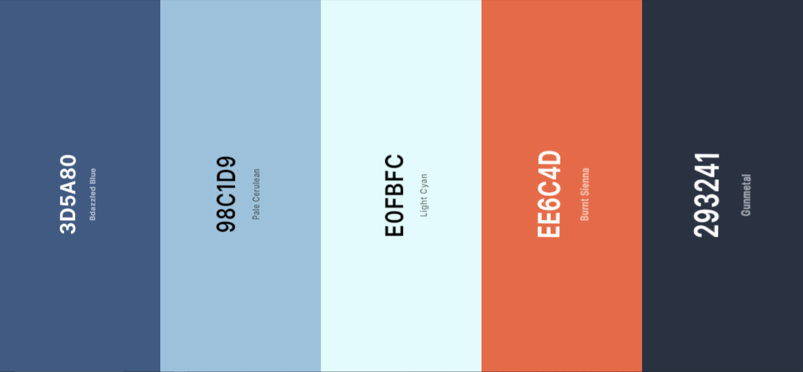

Color Scheme
After searching through some of the color schemes, this one stood out to
me more than the others. I thought it would look realy good.

Body font-color: #293241
Header backgound-color: #E0FBFC
Navagation backgound-color: #3D5A80
Navagation font-color: #E0FBFC
Navagation hover backgound-color: #98C1D9
Navagation hover font-color: #293241
Navagation active backgound-color: #EE6C4D
Navagation active font-color: #293241
Footer backgound-color: #293241
Footer font-color: #E0FBFC